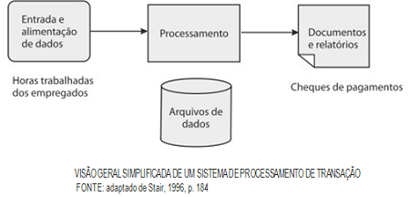
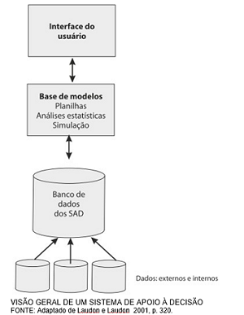

O conceito de sistemas de informações é um conjunto de componentes inter-relacionados de pessoas, hardware, software, redes de comunicações que coletam, processam informações destinadas à tomada de decisões para coordenar e gerir uma organização. E a estrutura básica dos sistemas de informações se resume em entrada, processamento, saída e feedback. A entrada é a coleta dos dados da organização, o processamento converte esses dados em informações significativas, e, por fim, a saída transfere esses dados processados às pessoas responsáveis. O feedback serve para ir afunilando a qualidade das informações e evitar possíveis erros futuros.
Para saber melhor a definição de sistemas de informação, veja este vídeo da Univesp com tudo bem explicado!
Classificação
A classificação dos sistemas de informação se dá através do fornecimento de determinada informação e de sua utilização. E, uma vez que os diversos tipos de sistemas trabalham de forma integrada numa organização, eles visam a melhor atuação de cada área dentro desta e, consequentemente, contribuindo para o desempenho geral da empresa. Há diferentes formas de se classificar os sistemas, com base em enfoques distintos, como pode-se ver abaixo:
Conforme as áreas funcionais da organização
Sistemas de vendas e marketing: servem para acompanhar as tendências dos concorrentes, monitorar o desempenho de vendas, analisar pesquisas de mercado, etc. Como exemplos tem-se a análise de regiões de vendas, o registro de pedidos e a previsão de tendência de vendas;
Sistemas de finanças e contabilidade: são responsáveis pelos investimentos a longo prazo, dão suporte para controlar os recursos financeiros e podem prever o desempenho financeiro da organização. Estes sistemas englobam as contas a pagar e o dinheiro a receber, a análise de lucratividade e a previsão orçamentária;
Sistemas de recursos humanos: têm a finalidade de acompanhar e analisar o recrutamento, o desligamento de colaboradores e de identificar os requisitos para cada posição. São exemplos deste tipo de sistema o controle de cargos e funções, a previsão da força de trabalho e o registro de pessoal.
Conforme os níveis organizacionais
Sistemas de nível operacional: auxiliam o processamento e acompanham transações de uma organização. São conhecidos como sistemas de processamento de transações (SPT), sendo possível, por meio destes sistemas, fazer registro de pedidos de vendas, expedição de mercadorias, reservas de hotel, etc;

Sistemas de nível gerencial: realizam o monitoramento e controle das atividades cotidianas da empresa, dando suporte a elas, como fornecendo relatórios de desempenho, de histórico da empresa, de vendas e demonstrativo financeiro, de estoque, etc. São subclassificados em Sistemas de Informações Gerenciais (SIG) e Sistemas de Apoio à Decisão (SAD);

Sistemas de nível estratégico: utilizada pela alta administração (área executiva), são mais conhecidos como Executive Information System (EIS). São responsáveis por dar acesso rápido a informações atualizadas da empresa. O executivo é capaz, através destes sistemas, de ver detalhes de vendas por produto ou por vendedor, verificar indicadores de lucratividade por produto, por região, entre outros.
Outras classificações
Enterprise resource planning (ERP): também chamado de planejamento de recursos empresariais, serve para integrar e automatizar os processos operacionais. Auxilia nos ganhos de eficiência, no aumento de controle nos processos e no acesso a informações sobre operações de negócio;
Supply chain management (SCM): é também conhecido como sistema de gerenciamento da cadeia de suprimentos e tem como objetivo agilizar os processos desta área, como planejar a atividade produtiva e da cadeia de suprimento, prever e gerenciar a demanda e a alocação da capacidade produtiva, etc;
Customer relationship management (CRM): comumente conhecido como sistema de gerenciamento do relacionamento com o cliente, consiste em sistemas que integram os processos de atendimento ao cliente em vendas, marketing, gerenciamento de pedidos e suporte ao consumidor no pós-venda;
Business intelligence (BI): chamado também de inteligência empresarial, são sistemas que auxiliam na tomada de decisões através de ferramentas e aplicativos. É possível, por meio deste sistema, visualizar informações em diversos cenários, cruzar dados, analisar os indicadores de desempenho da organização, entre outros.
O HTTP (HyperText Transfer Protocol) possui códigos de status de resposta que é gerado toda vez que se acessa uma página de um site. Esses códigos indicam se uma requisição HTTP foi corretamente concluída. Quem nunca recebeu o código 404 ao tentar acessar uma página? Ele é um dos vários códigos de status de resposta do HTTP que existe.
Esses códigos são compostos por 3 dígitos, em que o primeiro número se refere à classe do código. Genericamente, são:
1XX: informational, significa que o pedido foi recebido e está em análise;
2XX: sucess, isto é, o pedido foi recebido com sucesso, aceito e processado;
3XX: redirection, que pede ações adicionais para o pedido ser completado;
4XX: cliente error, ou seja, o pedido contém informações incorretas ou que não dá para processar;
5XX: server error, significa que o servidor não conseguiu processar o pedido, embora esteja correto.
Códigos Mais Comuns
Os códigos mais comuns de falhas são:
100: continue, quer dizer que tudo ocorreu conforme o esperado até então e o cliente pode continuar com o pedido ou ignorar se já fez o que gostaria;
200: OK, isto é, a requisição foi bem sucedida;
301: moved permanently, indica que a página foi movida para outro endereço da web, tendo o novo endereço especificado na resposta;
302: found, quando a página foi movida temporariamente;
400: bad request, ou seja, o servidor não entendeu o pedido (requisição) por estar com uma sintaxe incorreta;
403: forbidden, quando a identidade do cliente é conhecida e este não pode acessar o conteúdo do servidor, assim o servidor rejeita dar a resposta ao cliente;
404: o famoso not found, acontece quando o servidor não consegue encontrar o recurso que foi solicitado. Em outras palavras, significa que o endereço buscado não existe. É um erro tão comum que muitos web designers criam páginas criativas deste erro, como é o caso deste site do Nubank;
508: request time-out, isto é, a requisição demorou muito tempo, o servidor, então, expira e encerra a conexão exibindo este erro;
410: gone, significa que o recurso não está mais disponível, isto é, o conteúdo pedido foi deletado permanentemente do servidor, sem conter um endereço de redirecionamento, diferentemente do erro 301;
500: internal server error, ou seja, um erro interno do servidor;
502: bad gateway, é quando o servidor, trabalhando como um gateway com a finalidade de conseguir uma resposta para manipular o pedido feito pelo cliente, retorna com uma resposta inválida.
Do inglês Hypertext Markup Language, é uma tecnologia de marcação a qual utiliza tags como forma de organizar as informações, dando significado a ela. Assim, é uma tecnologia client side, uma vez que roda no lado do cliente. É uma linguagem de marcação e não de programação, ou seja, o HTML não é utilizado para funções dinâmicas. Porém, nele é possível formatar e organizar documentos, como o Microsoft Word. Usa-se esta linguagem de marcação para fazer e estruturar seções, parágrafos e links através da codificação de elementos (tags e atributos) para marcar uma página na internet.
CSS
É uma sigla para Cascading Style Sheets que, em português, significa ‘folhas de estilo em cascata’. É uma linguagem para definir um estilo (aparência) a páginas da internet. Utiliza-se ela para prover cor, margem, tamanho para páginas que usam linguagens de marcação, como o HTML. É uma tecnologia client side também, pois é uma linguagem interpretada pelos browsers. Com o CSS é possível separar o formato e o conteúdo do documento web, uma vez que se utiliza a linguagem de marcação para marcar e estruturar o conteúdo e o CSS para formatar a apresentação deste conteúdo na página da internet.
JavaScript
Nasceu da união do Java com o LiveScript do Netscape. É uma linguagem de programação utilizada para criar páginas dinâmicas, validar formulários e manipular o documento de HTML para alterar dinamicamente sua estrutura. É uma tecnologia tanto client side quanto server side com o NodeJS, pois os códigos são executados no computador do usuário e também no servidor. Quer dizer que os códigos são executados, baixados e exibidos pelo navegador e no navegador. O JavaScript é responsável por mostrar conteúdos interativos, gráficos 2D/3D animados, controlar multimídias, imagens animadas, etc.
PHP
É uma sigla para Hypertext Preprocessor, sendo uma linguagem de programação que serve para desenvolver aplicações para a web e para produzir sites, conectando o servidor e à interface do usuário. Possui código aberto, não tendo uso de direitos atrelados à essa linguagem e, assim, favorecendo o usuário a realizar mudanças na sua estrutura. Uma outra vantagem é a integração da comunidade de programadores de PHP para fazer melhorias nos códigos. PHP é uma tecnologia server side, uma vez que ele é executado no servidor, o qual lê os comandos e faz a ativação dos elementos funcionais e de interface visual da página da internet. Sua principal aplicação na web é para estruturar sites em WordPress.
SQL
Em inglês Structure Query Language que significa Linguagem de Consulta Estruturada, é utilizada para realizar consulta em banco de dados relacional, baseado em tabelas. Por meio dele, desenvolvedores de uma empresa podem acessar e modificar dados desta, unificando a troca de informações. Com esta tecnologia é possível analisar e executar tarefas em tabelas, além de escrever queries (comandos de consulta) contendo várias informações. É uma linguagem server side, pois o servidor vai processar o código para acessar o banco de dados.